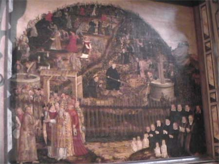

March 14, 2004
Third Sunday in Lent
Psalm 63:1-8
Isaiah 55:1-9
1 Corinthians 10:1-13
Luke 13:1-9
“TENDING THE GARDEN OF GRACE”
There
is an amazing painting by the Reformation artist Lucas Cranach that
hangs in St. Marys in Wittenberg, Germany. I was part of a PLU Travel
Seminar that was in Wittenberg on Reformation Day this past fall. Our
guide was taking us on a tour of the town church where Luther often
preached, and pointed out a significant piece of art that portrayed the
church as a garden or a vineyard. The painting is divided into two
segments. On the left we see a vineyard which is in ruin, full of weeds
and stones and part of it is in flames. Here the Pope and his minions
(bishops, priests, and other religious leaders of the day) are busy
destroying what was once a beautiful garden setting. On the right,
however, is a vineyard that is flourishing and bearing much fruit. We
see Martin Luther and other reformers tending to the vines with great
care, fertilizing and watering them with the Word of God. They are, in
fact, nourishing God’s garden of grace.
This is a wonderful illustration that captures the spirit of the texts
for the Third Sunday in Lent. For these are lessons that bear a message
of grace, mercy, and repentance—all central themes to our Lenten
journey. And as we ruminate particularly on Jesus’ parable of the fig
tree, it becomes important to note that whether it be a fig tree or a
grapevine, the lack of fruit does not appear to be solely the fault of
the plant. It depends as much or more on good growing conditions and
the care of the gardener—and in the case of the parable, on the second
chance the gardener gives it to produce fruit the following year. In
the Cranach painting, we note that those vines that are under the care
of the Pope and the leaders of the Roman church don’t have much of a
chance to bear fruit. In fact, they are literally dying on the vine and
are being thrown into the fires of judgment and damnation. Whereas, the
plants that are receiving the tender loving care of Luther and the
Reformers are doing well. They are thriving in a climate of gospel and
grace.
The parable from Luke demonstrates a healthy interdependence between
the fig tree, the gardener, and the owner. Jesus implies that the fig
tree is the believer—who is dependent upon the care of the gardener
(the disciples and religious leaders) to provide the right conditions
for growth. The gardener depends on the owner (God) to allow another
year for the tree to be nourished in hopes that it will produce fruit.
And the gardener also depends on the fig tree to blossom and grow and
bear fruit.
The grace shown by the owner, first by allowing it to stand for three
years, and then by giving the gardener one more year demonstrates the
importance of the fig tree to the owner and of each person to God. For
we are as dependent on God’s mercy and grace in Jesus Christ as the fig
tree is on the mercy of the owner and the gardener. We depend daily on
God to give us what we need both physically and spiritually. We look to
our baptism daily to remind us of God’s forgiveness and love in spite
of our faithlessness and our barren lives. We look to Jesus Christ to
save us from our inability to love as we ought or our failure to
practice generosity, patience, and kindness in our daily relationships.
Just as God gave the Israelites numerous chances to repent, we too are
dependent on God to give us yet another chance—to spare us from the axe
that would cut us down.
One of my favorite movies of this past year was Sea Biscuit, the story
of a discarded horse that helped salvage the lives of three misfits (a
jockey, horse trainer, and owner). Like the fig tree, the animal and
these men were given a second chance. Sea Biscuit became the unlikely
hero whose come from behind victories brought out their personal best.
In one scene the horse’s jockey confronts the skeptics saying: “He was
down but not out. He was a little guy that didn’t think like a little
guy.” Then quoting Shakespeare, he says: “Though he be but little, he
is fierce.” In the end, this became a parable of grace and redemption.
For an entire country that had been plunged into despair because of the
Great Depression, it was a true story that gave many hope and
encouragement for the future.
God also wishes for us to grow and thrive and claim our future as
beloved children of God. During this Lenten season, we are reminded to
turn our hearts back to God and to follow Jesus. IF we do not do
this—if we do not bear the fruit of Christ’s spirit in our lives—we
risk judgment and separation from God both now and in the life to come.
Yet we know that God will show us grace, just as he did for the fig
tree. However, we must not take that grace for granted. We respond to
God’s grace and mercy—God’s offer of a second chance—by bearing much
fruit.
Link to the First Reading
The prophet Isaiah issues an invitation on God’s behalf to the people of Israel in our first reading. God invites the thirsty and the poor to an abundant banquet for which no one has to work but which God is giving out of generosity. Isaiah invites Israel to return to God and listen so that they might live. We are reminded of the passage from Joel that begins this Lenten season on Ash Wednesday: “Return to the Lord, your God, for God is gracious and merciful.” Such grace is offered here as God promises to restore a nation that has turned away and gone its own way—if only they will repent and turn again toward God.
Link to the Second Reading
Paul warns the Corinthians against using the grace of Jesus Christ as a warrant for rejecting the law completely and living lives full of immorality (consider the popes and religious leaders of medieval days!) The Corinthians apparently feel immune to the consequences of the law, believing that God’s mercy will apply to them regardless of whether or not they are repentant. Paul uses an example from Israel’s history, reminding the Corinthians of the exodus when God was not pleased with the Israelites behavior and struck many of them dead for their disobedience. Paul reasons that if those God chose and accompanied through the desert were not immune to God’s wrath, why should the early Christians in Corinth believe that are immune from punishment? Paul cautions them against committing sins of idolatry, sexual immorality, putting Christ to the test, and complaining. At the same time, Paul reminds them—and us—that the promise of God is faithful and will not let the temptations overwhelm them or us.
Link to the Gospel Reading
St.
Luke provides us with more examples of the need for repentance. He
mentions two episodes of calamity and suffering: Pilate’s cruelty of
mingling the blood of the Galileans with their sacrifices and the
collapse of the tower of Siloam. Jesus comments that the people who
perished in both cases were no worse sinners than anyone else. His
point is not God’s judgment on callous, unrepentant sinners. Jesus
rather seeks to demonstrate the need for repentance for all people,
something those who perished seemingly had no opportunity to do before
their deaths. Jesus does not cast judgment on those who died nor does
he suggest that these tragedies were of God’s design. Rather, he
impresses upon his hearers the urgency of the need to repent now while
they have time.
The final parable in this gospel text is one Jesus tells to illustrate
that the repentant life bears as much fruit as a tree that has been
treated with fertilizer. The fig tree, barren for three years is
granted yet another year to produce fruit—with the help of some manure.
The gardener has shown the tree grace in letting it live for yet
another year, a grace that all of us rely on as sinners. But the time
is short. Fruit is expected within another year or the tree will be cut
down. The message is clear: “repent or perish.”
QUESTIONS FOR DISCUSSION
- What are the signs that our lives are bearing the fruit of the spirit?
- What do we need to be nourished in faith and grow in faithfulness?
- What lessons can be learned from God’s treatment of the Israelites in the first lesson?
- What seems to be at issue for St. Paul in taking the Corinthian church to task?
- How does Paul use a story from Israel’s history to make his point?
- Is there evidence that Christians and the Church today needs to hear a similar word? Where have we failed to live in the spirit of Jesus in our relationships, our attitudes, and our priorities?
- How might our Lenten journey be calling us to repentance and new life?

Lectionary Resources:
Currents in Theology and Mission (February 2004, Vol. 31, No. 1), pp. 70-72.
Lectionary Homiletics (February 2004/March 2004, Vol. XV, No. 2), pp. 47-53
This WORDLINK prepared by:
Rev. Dr. Richard W. Rouse
Pacific Lutheran University
Copyright © 1999-2004. Pacific Lutheran University.
Site maintained by Colin Dunn and Church Relations.
Last Updated: March 7, 2004